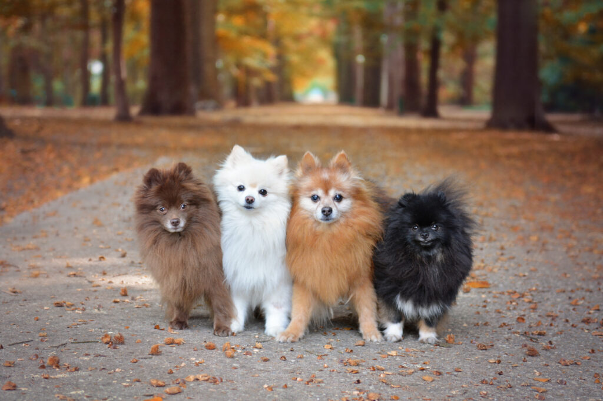

El Pomerania es una raza pequeña con una fascinante historia. Originalmente descendiente de perros grandes de trineo de la familia Spitz, usados en el norte de Europa. Su nombre proviene de la región de Pomerania (entre Alemania y Polonia), donde se comenzaron a criar versiones más pequeñas. Se hizo famoso en el siglo XVIII cuando la Reina Victoria lo popularizó al criar ejemplares más pequeños, transformándolo en el perro miniatura que conocemos hoy. Fue reconocido oficialmente por el American Kennel Club (AKC) en 1888. Características: Tamaño pequeño, pero con gran personalidad. Pelaje esponjoso y de doble manto. Inteligente y fácil de entrenar. Variedad de colores como naranja, blanco, negro y azul. El Pomerania es un perro valiente, energético y lleno de carácter, ideal para ser un compañero fiel.
1. Pomerania Clásico o Estándar Es el tipo más común y reconocido por los estándares oficiales. Tiene un hocico alargado, orejas puntiagudas y una cola esponjosa sobre la espalda. Su pelaje es abundante y esponjoso. 2. Pomerania Tipo Oso de Peluche (Teddy Bear) Su cara es más redonda y achatada, dándole un aspecto tierno y de osito de peluche. Tiene ojos más grandes y redondos, lo que lo hace parecer aún más adorable. Su pelaje es denso y esponjoso. No es un tipo oficial reconocido, pero es muy popular. 3. Pomerania Tipo Zorro (Fox Face) Tiene un hocico más largo y delgado, parecido al de un zorro. Su cuerpo es más estilizado y elegante. Es el tipo más parecido al Pomerania original antes de la reducción de tamaño. 4. Pomerania Mini o Toy Es más pequeño que el estándar, pesando menos de 2 kg. Suelen ser criados con un tamaño reducido, pero pueden ser más frágiles y propensos a problemas de salud. No es una categoría oficial, pero es muy demandado. 5. Pomerania Boo o "Baby Doll" Se hizo famoso por el perrito Boo, un Pomerania con corte de osito de peluche. Tiene una cara muy redonda, con hocico corto y ojos grandes. Suelen llevar un corte especial para mantener su apariencia tierna. 6. Pomerania Exótico (de colores raros) Aunque los Pomeranias suelen ser naranjas o crema, existen en colores poco comunes como: Negro sólido Chocolate Merle (manchas de varios colores) Particolor (mezcla de blanco y otro color)